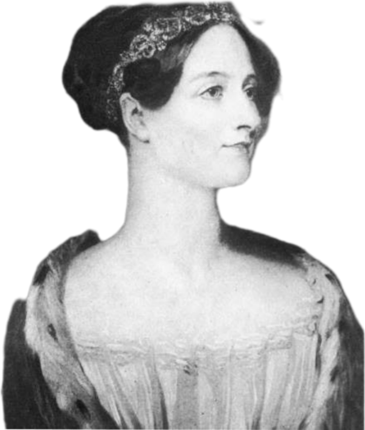
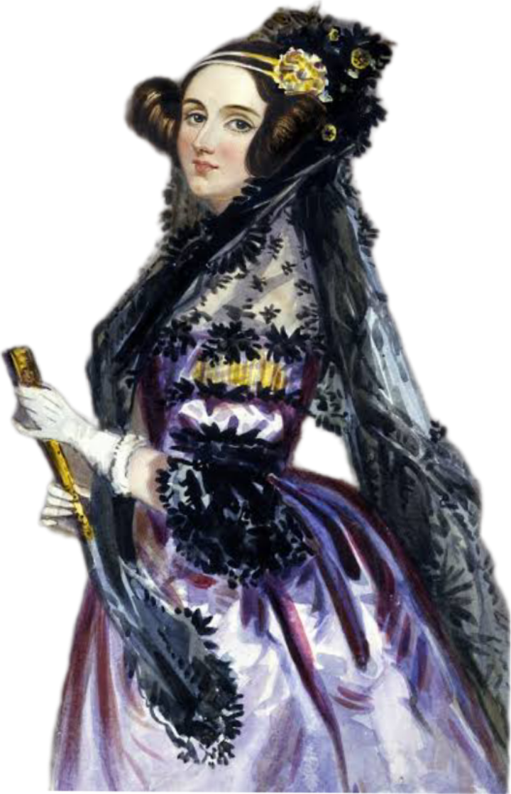

Augusta Ada Byron King
Augusta Ada Byron King, Condessa de Lovelace, atualmente conhecida como Ada Lovelace, foi uma matemática e escritora inglesa. Hoje é reconhecida principalmente por ter escrito o primeiro algoritmo para ser processado por uma máquina.
O que a Ada Lovelace criou?
Qual foi o primeiro algoritmo que Ada Lovelace criou?
Qual a importância de Ada Lovelace para a tecnologia?
